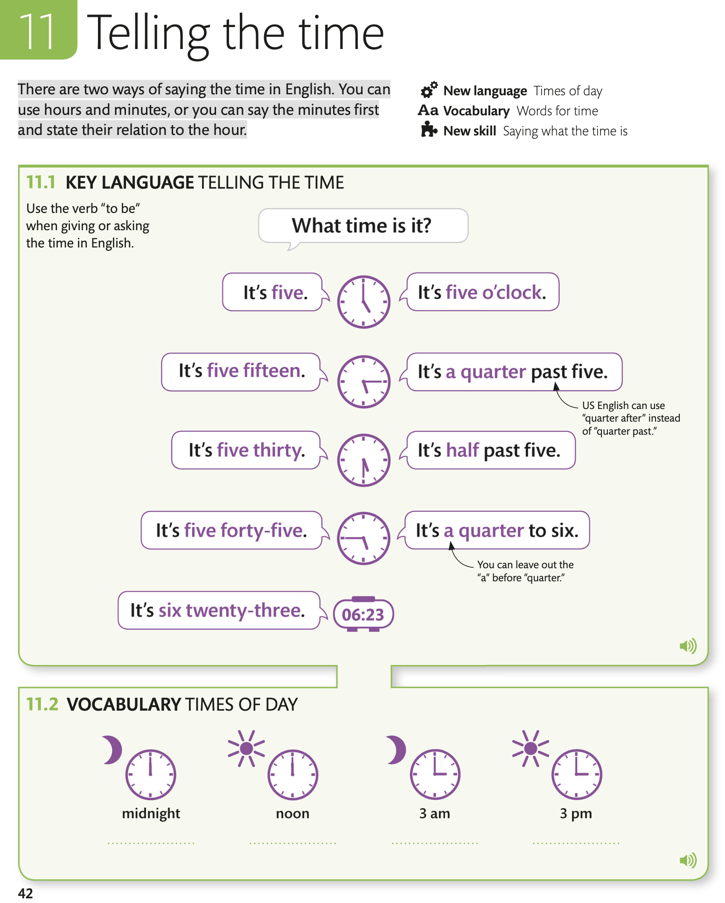

Telling the time / Определение времени
There are two ways of saying the time in English. You can use hours and minutes, or you can say the minutes first and state their relation to the hour.
Есть два способа сказать время на английском языке. Вы можете использовать часы и минуты или сначала произнести минуты и указать их связь с часом.

11.1 KEY LANGUAGE TELLING THE TIME
Use the verb “to be” when giving or asking the time in English.
Используйте глагол «to be», когда указываете или спрашиваете время на английском языке.
11.2 VOCABULARY TIMES OF DAY
AUDIO